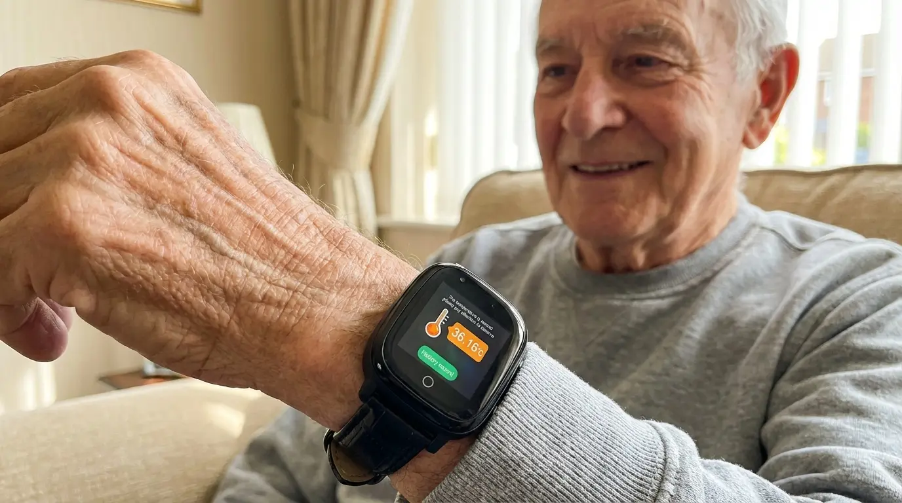
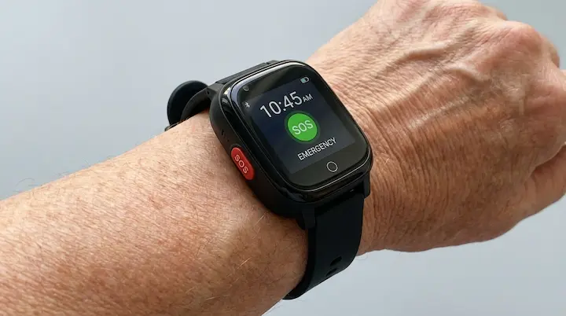
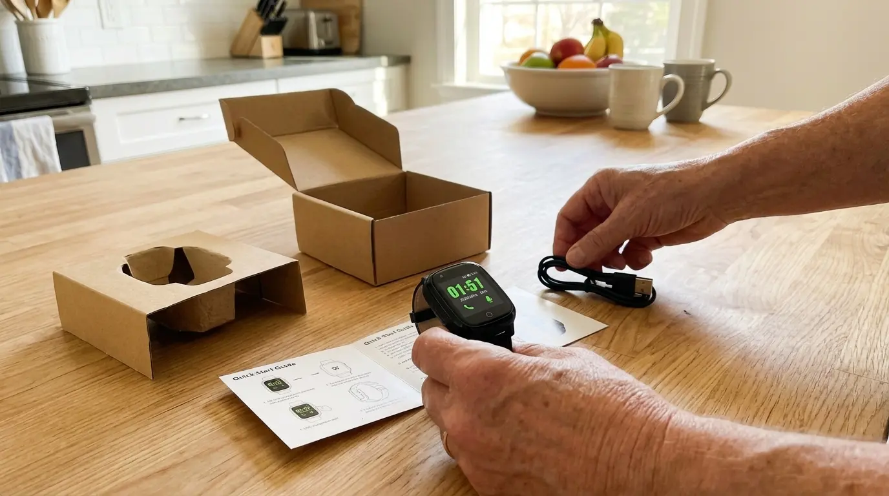
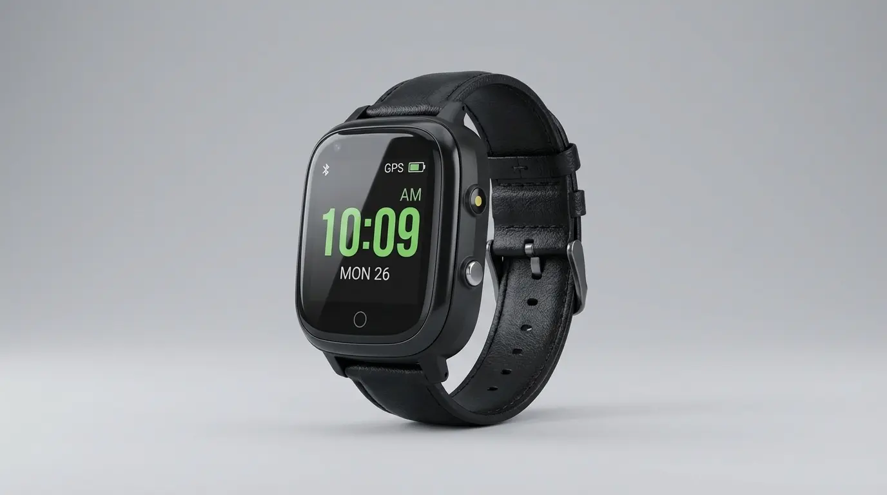
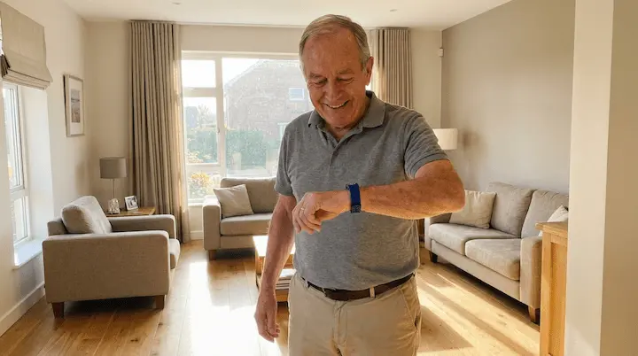
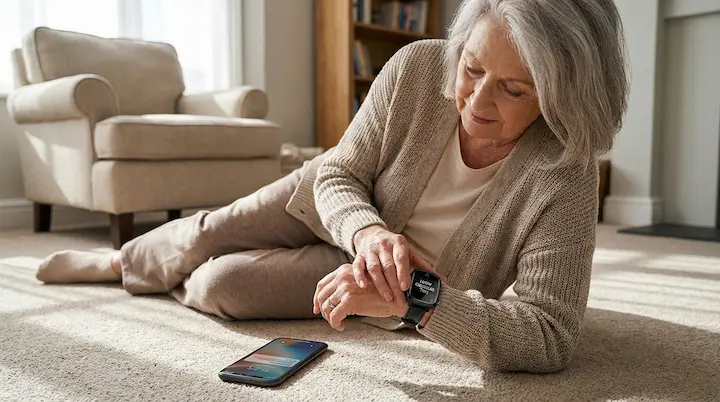

I Was Terrified My Father Would Wander Away and Never Come Back. Then a Neighbor Told Me About a $159 Watch That Changed Everything (And It's NOT a Phone or a Pendant)
.webp)
Last Tuesday morning, my phone rang at 7:14 AM. It was my father.
"Good morning, sweetheart. I'm just calling to tell you I walked to the park and I'm sitting on our bench."
I didn't panic. I didn't feel that familiar wave of ice-cold dread flooding my chest. Instead, I smiled, opened an app on my phone, and there he was — a little blue dot, right at Morrison Park, exactly where he said he was. Safe. Accounted for. Independent.
Six months ago, that phone call would have sent me into a full-blown anxiety attack. Six months ago, I would have dropped everything, called the neighbors, maybe even dialed 911 — because my father had been wandering from home, and we had absolutely no way to know where he was.
Today, I'm going to tell you exactly how we went from living in constant terror… to finally sleeping through the night again. And it all started with a small, unassuming wristwatch that costs less than a decent pair of shoes.
Nine Months Ago, I Was Watching My Father Slip Away

My father, Richard, is 78 years old. He was a high school principal for 32 years. The sharpest man I ever knew. The man who could recite entire passages from books he'd read decades ago. The man who taught me that preparation and attention to detail were the cornerstones of a good life.
But about two years ago, things started to change.
It was small at first. He'd forget where he put his car keys. He'd miss an appointment. He'd call me on a Tuesday thinking it was Thursday. I told myself it was just aging. Everyone forgets things.
Then it got worse. Much worse.
One afternoon, my mother called me in tears. Dad had left the house to "go to work" — something he hadn't done in 14 years since retirement. She found him 45 minutes later, standing on the corner of Miller and 5th, staring at a building that hadn't been a school in over a decade. He was confused. Disoriented. He didn't know how to get home.
That was the first time. It wasn't the last.
Over the next three months, my father wandered away from home seven times. Twice in the middle of the night. Once he made it almost two miles before a stranger at a gas station called the police. The officer told my mother, as gently as he could: "Ma'am, you got lucky this time. Not everyone does."
I lived three hours away. Every time my phone rang, my heart stopped. Every time I saw "Mom" on my caller ID, I braced for the worst. Is he lost again? Is he hurt? Did someone find him? Is he… alive?
The Guilt Was Destroying Me From the Inside Out

If you've been in this situation, you know the guilt. It's a living, breathing thing that sits on your chest 24 hours a day.
I should move closer. I should quit my job. I should be there.
But life doesn't work that way, does it? I have a husband. Two kids in school. A job I can't just walk away from. And my mother — God bless her — was already running herself ragged trying to keep an eye on Dad around the clock. She was 74 and barely sleeping.
So I tried everything. And I mean everything.
I bought him a medical alert pendant. The classic kind with the button around his neck. He ripped it off after two days. He said it made him feel like an invalid. He said the neighbors would think he was feeble. The pendant sat in a kitchen drawer after that, collecting dust — $35 a month for a device he refused to touch.
I tried a smartphone with a tracking app. What a disaster. He couldn't unlock the screen. He accidentally turned off location services. He'd leave it on the kitchen counter or in his jacket pocket in the closet. The one time he actually wandered with it, the battery was dead.
I tried a clip-on GPS tracker. He lost it on day three. It fell off his belt in a restaurant bathroom. Gone. $120 down the drain.
I tried locking the doors from the outside. My mother hated it. It felt like a prison. And frankly, it was a fire hazard.
Every solution failed. Every single one. And with every failure, I watched something break a little more in my father's eyes. One evening, sitting at his kitchen table, he looked at me and said something I'll never forget:
"I know I'm not the same, Becca. But I don't want to be treated like I'm already gone."
That sentence hit me like a freight train. He didn't want to be monitored like a prisoner. He didn't want clunky devices that screamed "something is wrong with me." He wanted to feel like a man. Like himself. Like he still mattered.
I went home that night and cried for two hours. I felt like I was failing the one person who had never failed me.
Then My Neighbor Told Me Something That Changed Everything
Two weeks later, I was at a neighborhood cookout. Barely paying attention, mostly staring at my phone waiting for my mother to check in. My neighbor, Karen, noticed.
"Still worried about your Dad?" she asked, sitting down next to me.
Karen's own mother-in-law had been going through the same thing. The wandering. The fear. The impossible feeling of trying to keep someone safe without locking them in a room. She understood better than most.
Then she said something that made me put my phone down.
"Have you heard about the GPS safety watches? Not the big bulky medical ones. There's this watch that looks just like a regular wristwatch — but it has real-time GPS, a panic button, fall detection, even two-way calling. My mother-in-law has been wearing one for four months. She thinks it's just a nice watch. She has no idea we can see exactly where she is at all times."
I stared at her. "A watch? Like a regular watch?"
"Exactly like a regular watch. No pendant. No phone to lose. No clip to fall off. Just a watch on their wrist. And the GPS updates in real time to an app on your phone. Plus there's a red button — if they press it, it calls you immediately and sends their location. Automatically."
I went home that night and started researching. By midnight, I'd found it. By 12:23 AM, I had placed my order.
What I Found Online Made Me Order It That Same Night

The product was called the SafeGuard 4G LTE GPS Watch — a sleek, lightweight wristwatch built specifically for seniors who need safety monitoring without the stigma.
As I scrolled through the details, my jaw literally dropped. This wasn't some cheap toy tracker. This was a professional-grade safety device disguised as an everyday watch. Here's what I read:
● Real-time GPS tracking over 4G LTE cellular networks — not Bluetooth, not WiFi. Real cellular coverage that works anywhere there's a signal. At the park. At the grocery store. On a highway. Anywhere.
● One-touch SOS emergency button — your loved one presses one red button and it instantly calls your phone and sends a GPS location. No menus. No passwords. No confusion. Just one button.
● Automatic fall detection — built-in sensors detect when the wearer falls and automatically trigger an emergency alert with their location, even if they can't press the button themselves.
● Two-way voice calling — call the watch directly and talk through the built-in speaker and microphone. It's like a phone that's strapped to their wrist and can never be lost.
● Geofencing — draw invisible boundaries on a map (home, neighborhood, care facility). The instant they step outside those zones, you get an alert on your phone.
● Multi-day battery — no more dead devices at the worst possible moment.
And the price? $159. Not $400 like a smartwatch. Not $35-50 per month like a medical alert subscription. A one-time cost of $159 plus a cheap prepaid SIM card for a few dollars a month.
I remember sitting in bed, laptop on my knees, tears in my eyes. Not sad tears. Hopeful tears. For the first time in months, I felt like maybe — just maybe — there was a solution that would actually work.
Could this really be the answer? Could a $159 watch actually give us our lives back?
I hit "Order Now" before I could talk myself out of it.

YES! I WANT TO PROTECT MY LOVED ONE →Day 1: The Setup Was So Easy I Almost Didn't Believe It

The package arrived in three days. Inside: the watch, a magnetic charging cable, a quick-start guide, and simple instructions for downloading the free companion app.
The whole setup took me about 15 minutes. I popped in a prepaid SIM card (a basic $8/month plan from a local carrier), downloaded the app to my iPhone, paired the devices, and immediately set up two geofences: one around my parents' house and one around their neighborhood.
The app was shockingly intuitive. Within minutes, I could see the watch's exact location on a map. I could call it. I could set emergency contacts. I could see battery level. I could configure the fall detection sensitivity. I could even set up location history so I could review where Dad had been during the day.
I remember thinking: "This is it. This is what everything else should have been."
The watch itself looked great. Clean. Simple. Like a regular digital watch that any man would be comfortable wearing. No blinking lights. No medical symbols. No "HELP" buttons on the outside that scream "I need supervision." Just a discreet, modern wristwatch.
The SOS button was there, of course — but it was integrated into the design. You had to know it was there to use it. To anyone else, it just looked like part of the watch.
The Moment I Put the Watch on My Father's Wrist
I drove to my parents' house that Saturday. I was nervous. After the pendant disaster and the smartphone fiasco, I half-expected another rejection. Another piece of technology that would end up in a drawer.
I handed the watch to my father. "Got you a present, Dad."
He turned it over in his hands. Looked at the face. Put it on his wrist. Tightened the strap.
"Nice watch, Becca. Looks sharp."
That was it. No resistance. No "I don't need this." No hurt pride. He just… put it on. Because it looked like something a man would want to wear.
I showed him one thing and one thing only: the red button. "Dad, if you ever feel lost or scared or need me for any reason — just press and hold this button. It'll call me right away and I'll know exactly where you are."
He nodded. "Like a walkie-talkie?"
"Exactly like a walkie-talkie."
He smiled. My mother caught my eye across the room. She was already crying.
Week 1: I Could Finally Breathe Again
Monday: Dad went for a walk to the mailbox. I saw it on the app. He walked to the corner and came back. No alert. No panic. Just information. Beautiful, simple information.
Tuesday: Geofence alert at 3:12 PM. Dad had walked two blocks past the neighborhood boundary. I called the watch. "Hey Dad, how's the walk?" He told me he was looking at the new houses being built down the road. I talked him back home. Total elapsed time from alert to safe return: 4 minutes.
Wednesday: No alerts. Checked the app three times throughout the day just because I could. He was home each time. Slept like a baby that night.
Thursday: Dad pressed the SOS button — accidentally, while trying to check the time. I called the watch in seconds. We laughed about it for five minutes. First time I'd laughed about anything related to his safety in almost a year.
Friday: My mother called me. Not in a panic. Not crying. She called to tell me she'd gone grocery shopping for an hour and left Dad at home alone for the first time in months. "I could see him on the app the whole time," she said. "He never left the house. Rebecca, I haven't had an hour to myself in eight months."
That Friday night, I opened a bottle of wine, sat on my patio, and just… exhaled. For the first time in what felt like forever, the knot in my chest was gone. I didn't have to wonder. I didn't have to guess. I could see, in real time, that my father was safe.
That's not just a gadget. That's a lifeline.
Month 2: The Features I Didn't Even Know I Needed
As the weeks went on, I discovered just how deep this little watch goes. Features I didn't even think to look for ended up being game-changers:
This is the backbone of everything. The watch communicates over 4G LTE cellular networks — the same technology that powers your smartphone. That means it doesn't stop working when your loved one leaves the house. It works at the park, at the store, on the highway, across town, anywhere with cellular signal.
The companion app shows their location on a map that updates in real time. You can also review location history to see where they've been during the day. I can't tell you how many times I've opened the app just to see that little dot at home and felt a wave of relief wash over me.
One press. That's all it takes. Your loved one presses and holds the SOS button, and the watch immediately calls your phone and sends a distress alert with their GPS coordinates. No menus. No apps. No unlocking screens. No confusion whatsoever.
Even someone with significant cognitive challenges can press a single button when they feel scared or disoriented. It's the simplest possible emergency system — and the most effective.

This is the feature that makes me sleep at night. Built-in accelerometer sensors detect sudden impacts consistent with a fall and automatically trigger an emergency alert — even if your loved one is unconscious, disoriented, or simply unable to press the SOS button.
Falls are the #1 cause of injury-related death among adults over 65. Every second after a fall matters. With automatic detection, you know immediately — not hours later when someone happens to find them.
This was the feature that turned everything around for our family. You open the app, draw a circle around any area on the map — home, the neighborhood, a care facility, a relative's house — and that becomes a "safe zone."
The instant the watch leaves that zone, you get a push notification on your phone with their real-time location. You can set up multiple zones. You can adjust the radius. You can catch a wandering incident in the first 60 seconds instead of discovering it hours later.
This single feature has saved my father at least four times. I don't say that lightly.
You can call the watch from your phone and have a clear, two-way conversation through the built-in speaker and microphone. Your loved one can also call you from the watch. It's essentially a phone strapped to their wrist that they can never misplace, lose, or accidentally turn off.
When Dad wanders and I call the watch, I can talk to him calmly, reassure him, and guide him back home. That voice connection — that human connection — makes all the difference. He hears my voice and he knows everything is okay.
The watch delivers reliable multi-day battery life under normal use. No more cheap trackers that die after six hours. No more checking battery percentage every 30 minutes. When it does need a charge, you simply snap on the magnetic USB cable overnight. Easy enough for my 74-year-old mother to do without any help.
"But Will It Work For MY Loved One?"
I know what you're thinking, because I thought the exact same things before I ordered. Let me answer every concern:
➤ "My father/mother won't wear anything that looks medical."
That's exactly why this works. It looks like a regular watch. No medical symbols. No pendant. No embarrassment. My father has been wearing his for five months and actually gets compliments on it.
➤ "My loved one has significant cognitive challenges."
The beauty of this device is that it works passively. GPS tracking and fall detection happen automatically in the background. Your loved one doesn't need to "use" it at all. They just wear it. The technology does the rest. The SOS button is there if they can press it — but even if they can't, the geofencing and fall detection have you covered.
➤ "We live far apart. Will it really work at a distance?"
Yes. The watch communicates over 4G LTE cellular networks, which means it has the same coverage as a smartphone. Whether you're across town or across the country, you'll see their location in real time on the app. I live three hours from my parents and I monitor Dad every single day.
➤ "What about the monthly cost?"
There is no subscription to the watch itself. It does require a prepaid SIM card with a basic data/voice plan, typically $5-10 per month from carriers like AT&T, T-Mobile, or their prepaid brands. Compare that to $35-50/month for a medical alert pendant — and this does ten times more.
➤ "Is it complicated to set up?"
I set it up in 15 minutes. Download the app, insert the SIM, pair the devices, set your geofences. There's a step-by-step guide included. If I can do it at midnight in my pajamas, trust me — you can do it too.
Note on carrier compatibility: The watch works with most GSMA-compatible carriers across the Americas including AT&T, T-Mobile, and their affiliated prepaid networks. Verizon is NOT compatible. A full compatibility guide is included with every order.
What Other Families Are Saying
The geofence alert went off at 6 AM on a Sunday. Mom had slipped out while I was still sleeping. I opened the app and she was four blocks east, heading toward the highway. I was in the car and at her side within 3 minutes. Before this watch, the last time she wandered, we didn't find her for almost 3 hours. I get chills thinking about the difference.
My father is proud. He's a veteran. He'd rather walk into traffic than wear something that makes him look helpless. This watch was the ONLY device he didn't reject. He wears it every single day. He even asked me to buy one for his buddy at the VFW. Meanwhile, I can check his location from my desk at work whenever I want. Everyone wins.
My husband fell in the garage. He hit his head and was unconscious. I was in the kitchen and had no idea. Within 30 seconds of the fall, my phone buzzed with an emergency alert showing his exact location in the house. I got to him immediately and called 911. The doctor said that fall could have been fatal if he'd laid there for hours. This watch is not optional for us anymore. It's essential.
I know that sounds ridiculous, but it's true. Before this watch, I couldn't leave my mother alone for 10 minutes without anxiety. Now I can see she's safe on my phone. I can take a shower. I can mow the lawn. I went grocery shopping alone for the first time in a year. That might not sound like much to most people, but to a caregiver, it's everything.
The Transformation Goes Far Beyond Location Tracking
I want to be completely honest with you. When I ordered this watch, I was hoping it would help me keep track of my father. That was the goal. Find him when he wanders. Get alerts when he leaves the house.
What I didn't expect was the transformation that happened to our entire family.
My father's confidence came back. He wasn't being "watched" — at least not in any way he could see or feel. He could walk to the park. He could stroll around the block. He could feel like himself again. The watch gave him back something priceless: his dignity.
My mother got her life back. For the first time in over a year, she could leave the house without terror. She could run errands. She could visit a friend. She could sleep through the night knowing that if Dad got up and left, her phone would tell her instantly. The dark circles under her eyes started to fade. She started laughing again.
Our whole family reconnected. My brother in California, my sister in Colorado — we all have the app. We all see Dad's location. We take turns monitoring. For the first time, the burden wasn't falling on one person. We're a team now.
And me? I stopped dreading phone calls from my mother. I stopped waking up at 3 AM in a cold sweat. I stopped feeling like the worst daughter in the world. I'm present for my own kids again. I'm present for my husband. I'm present for myself.
Nine months ago, a doctor told me to "prepare for the worst." He said my father's independence was going to shrink until there was nothing left.
Five months after getting the SafeGuard Watch, my father still walks to the park every morning. He still calls me on that watch to tell me about the squirrels he saw. He still feels like himself.
And I know, wherever he goes, I'm three seconds and one app away from knowing exactly where he is.
That's not just technology. That's love made tangible.
What's Included & What It Costs
I believe in complete transparency, so here's exactly what you get and what it costs:
SafeGuard 4G LTE GPS Watch — $159.00
Your order includes:
✓ SafeGuard 4G LTE GPS Watch (the complete device)
✓ Magnetic USB Charging Cable
✓ Quick-Start Setup Guide (with SIM card compatibility list)
✓ Free Companion App (iOS & Android)
✓ Free Standard Shipping (Continental USA)
✓ 30-Day Money-Back Guarantee
Ongoing cost: A basic prepaid SIM card with data plan, typically $5-10/month. No device subscription fees. No hidden costs. No contracts.
Now, let me put that in perspective:
➤ A medical alert pendant system: $30-50/month ($360-$600/year) — with no GPS tracking and no geofencing.
➤ A full-time in-home caregiver: $20-30/hour ($3,000-$5,000/month).
➤ An assisted living facility: $4,000-$8,000/month.
➤ A single emergency room visit after a fall: $3,000+
➤ The SafeGuard GPS Watch: $159 once, plus a few dollars a month for the SIM card.
For less than the cost of a single week of in-home care, you get 24/7 GPS monitoring, fall detection, SOS alerts, geofencing, and two-way calling — for as long as the watch lasts. No monthly device fees. No contracts. No cancellation penalties.
I know I'm biased, but I'll say it anyway: this is the best $159 I've ever spent in my life. And I'd pay ten times that amount for the peace of mind it's given us.
My Honest Advice to You, Caregiver to Caregiver
If you've read this far, you and I have something in common. We love someone who is vulnerable. We lie awake at night worrying. We carry a weight on our shoulders that most people will never understand.
I'm not going to insult your intelligence with high-pressure sales tactics. You're a caregiver. You deal with enough pressure already.
But I will tell you this: you have two paths in front of you right now.
Path 1: Close this page. Go back to the exhausting cycle of worry, sleepless nights, and that gut-wrenching feeling every time the phone rings. Keep trying solutions that don't work. Keep watching your loved one's independence slip away. Keep waiting for the incident you've been dreading.
Path 2: Order the SafeGuard GPS Watch today. Set it up in 15 minutes. Place it on your loved one's wrist. And within the hour, experience something you haven't felt in months — maybe years: genuine, bone-deep peace of mind.
I know which path I chose. And five months later, I would make the same choice a thousand times over.
Your loved one deserves to keep their independence. Your family deserves to stop living in fear. And you deserve to sleep through the night.
The SafeGuard Watch won't fix everything. But it will fix the thing that's been keeping you up at 3 AM. And that changes everything.